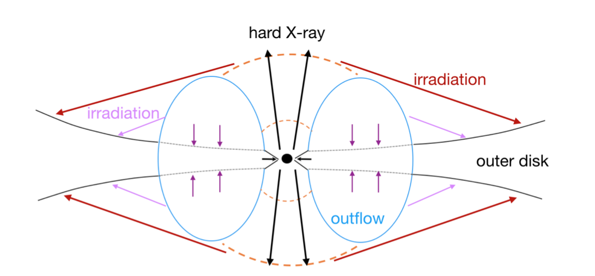
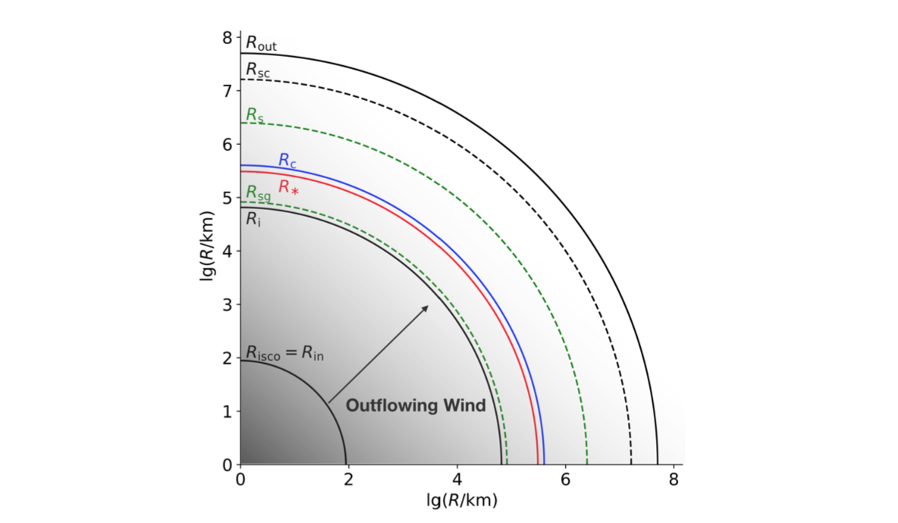
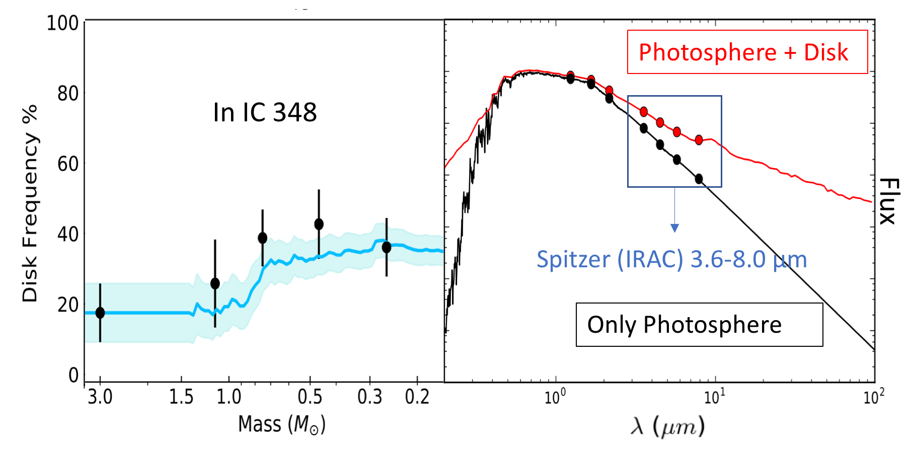
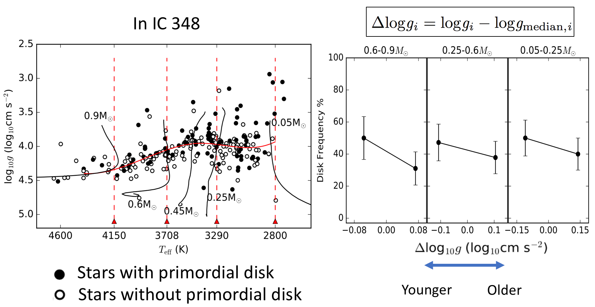

Research
-- What language is thy answer, O sky?
-- The language of eternal silence.
Science with the Zwicky Transient Facility
ddd.
ddd.
ddd.

The M -- MS -- S -- SC -- C spectral sequence of LAMOST Mira spectra.

Left: LAMOST spectra of O-rich Mira stars, with decreasing temperature from M0 to M10. Right: template spectra of normal M giants from Zhong et al. (2015) and Fluks et al. (1994).
Toward super-critically accreting stellar mass black holes: an analytical model
Ultraluminous X-ray sources (ULXs) are off-nuclear accreting X-ray sources in nearby galaxies with bolometric luminosities in excess of the Eddington limit for several tens of solar masses, assuming isotropic emission. Their high luminosity suggest that the nature of the central accretor could be: (1) an intermediate mass black hole (IMBH) exhibiting subcritical accretion; (2) a stellar remnant (black hole or neutron star) exhibiting beamed emission or accretion above the Eddington limit.
There has been evidence showing that the optical light is likely to be dominated by X-ray irradiation of the outer accretion disk instead of the stellar companion. A schematic diagram of supercritical disk with outflows is shown on the right. In the presence of an optically-thick outflow, hard X-rays from the inner disk are mildly collimated within a funnel near the rotation axis. The outer disk absorbs light from the last scattering surface of hard photons, and reprocess it into the ultraviolet (UV) and optical.
Together with my advisor Hua Feng, I attempted to utilize a straightforward model of radiation driven wind under supercritical accretion to explain the optical SED of soft ULXs. This model was first proposed by Meier (1982), and was more recently illustrated in Meier's book: Black Hole Astrophysics The Engine Paradigm (2012).


Evolution of Primordial Disks Around Young Stars observed by the IN-SYNC project
This study aims to address issues related to gas-rich optically-thick primordial disk evolution in three clusters observed by the INfrared Spectra of Young Nebulous Clusters (IN-SYNC) project, which is part of the APOGEE high resolution spectroscopic survey. All of stars observed by IN-SYNC have accurate stellar parameters including effective temperature (Teff) and surface gravity (logg) determined by spectral fitting (Cottaar et al. 2014). we are able to build a representative sample as a function of mass at an extinction limit in three clusters of known age. Furthermore,
Two main conclusions are achieved. First, we can look for disk evolution versus stellar age within a single cluster. By using logg as an age indicator and employing 4.5μm excess as a primordial disk diagnostic, we observe a trend of decreasing disk frequency for older stars. This is the most robust evidence to date for disk evolution within clusters exhibiting modest age spreads.
Secondly, in each cluster, we utilize color-magnitude diagrams as well as 2D K-S tests to build a representative sample as a function of mass at an extinction limit in three clusters of known age. Assessing the fraction of young stars with 4.5μm excess enables us to estimate how disk lifetime is dependent on stellar mass. The general relation is that primordial disks around intermediate mass stars (2–5M⊙) evolve faster than those around lower mass stars (0.1-1M⊙). However, we don’t find a significant drop of disk frequency for the lowest mass stars (0.1-0.3M⊙), which is always reported in previous studies.


Mira variables from LAMOST spectroscopic survey
Mira stars are a class of long period variables with periods in excess of 80 days that coincide with the final stellar evolutionary phase of low- to intermediate-mass (1–8 M⊙) stars before the envelope ejection phase. Because they are visible beyond the Local Group, and their distances can be roughly determined by their period-luminosity relationship, Miras have long been used as tracers of many astrophysical problems. For example, the picture of their chemical composition and spatial distribution can help to probe the structure and evolution of the Milky Way Galaxy (MWG). Therefore, the more Miras we know, the better we understand the MWG.
Traditionally, the search of Mira stars involves long-term IR photometry followed by carefully planned spectroscopic observations. Thanks to LAMOST, we now have a chance to search for Miras based on their spectral characteristics. Different from normal giant stars, the spectra of Mira stars have high-excitation emission lines of hydrogen and some metal elements. By measuring the intensity of emission lines, absorption bands, and using the archival near-infrared photometric data (2MASS), we have found 191 new Mira candidates from millions of spectra in the LAMOST DR4 catalogue. Photometric follow-ups are needed to confirm that these candidates are bona fide Mira stars.
In addition, we compiled a sample of 281 spectra of known Mira stars, including 12 early-type Miras that previously had not been carefully studied because of their rareness. After comparison and quantification, they found a relationship between relative Balmer emission-line strength and spectral temperature of O-rich Mira stars. The relative flux of higher orders in the Balmer series (Hdelta) increases as stars cool down from M0 to M10, which is likely driven by increasing TiO absorption above the deepest shock-emitting regions.
The M -- MS -- S -- SC -- C spectral sequence of LAMOST Mira spectra.
Left: LAMOST spectra of O-rich Mira stars, with decreasing temperature from M0 to M10. Right: template spectra of normal M giants from Zhong et al. (2015) and Fluks et al. (1994).
Searching for quasars behind the Andromeda Galaxy with PTF
Quasars are energetic supermassive black holes in the centers of distant galaxies. By accreting gas from the host galaxy, a quasar gives off huge amounts of energy, and is hundreds times brighter than the sum of all stars in the galaxy. The Andromeda Galaxy, also known as M31, is the nearest large spiral galaxy to the Milky Way, and as such has been an ideal laboratory to investigate many astronomical problems. Quasars behind M31 are difficult to be identified because of the high stellar surface densityn, yet they are powerful beacons to probe the interstellar medium (ISM) of M31 via metal absorption line systems in their spectra.
Our goal is to find quasars within and in the close outskirts of M31 with optical variability data from the Palomar Transient Factory (PTF) survey. We characterize the photometric data by extracting 40 parameters for each light curve, including 34 variability features and 6 color features. Based on Machine Learning (ML) algorithms, we used 59 known quasars and 500 known stars as a training set to build our “star-quasar” separation filter, which selected 120 quasar candidates. We obtained spectra for 54 candidates using the Palomar 5-m and Keck 10-m telescopes, and 49 of them were confirmed to be bona fide quasars, including 5 in the most challenging central 2.2 square degree region around M31. This is an improvement compared with previous results (true positive rate≈8%), and suggests that about 90% of the remaining 66 candidates are likely real quasars.
We consider our result, derived from an inquiry of PTF M31 time-domain dataset, as a preliminary study of quasars with the the Zwicky Transient Facility (ZTF, Kulkarni, Shrinivas R. 2016) or future synoptic surveys.

Quasar spectra from DBSP mounted on Palomar 5-m and LRIS mounted on the Keck 10-m telescope.